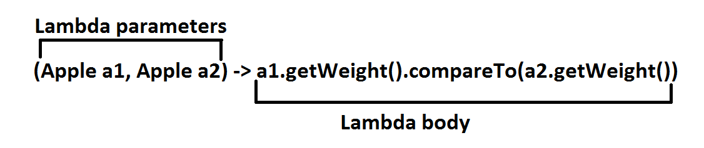
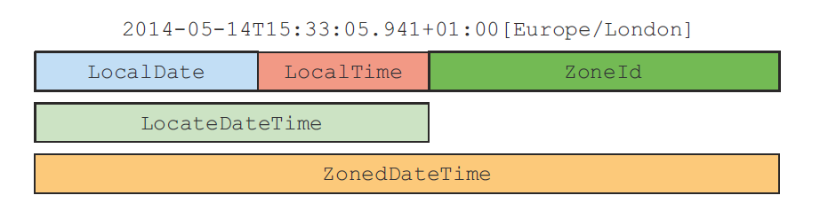

Java 8 in Action
Coding Beer Session
Created by Roman Badura
Content
- Functions in Java
- Streams
- Default Methods
Functional Interfaces & Lambdas
New view on Java methods.
Functional interface (What is it?)
Lambdas
Method references
New view on Java methods
Old View
New View
Functional interfaces
Only one abstract method.
Annotation is not required. (Similar like an override)
Interface can contain also default methods.
They can be instantiated using lambdas
Functional descriptor
() -> System.out.println("Run method");
Functional interfaces
public Funciton<T, R> { R apply(T t); }
public Predicate<T> { boolean test(T t); }
public Consumer<T> { void accept(T t); }
public Supplier<T> { T get(); }
public BiFunction<T, U, R> { R apply(T t, U u); }
In package: java.util.function (42-43)
http://docs.oracle.com/....Lambdas
- Anonymous
- Function
- Passed Around
- Concise
Method references
Reuse existing method definitions
More readable
| Lambda | Method reference equivalent |
|---|---|
| (Apple a) -> a.getWeight() | Apple::getWeight |
| (str, i) -> str.substring(i) | String::substring |
| (String s) -> System.out.println(s) | System.out::println |
How to construct method references
A method reference to a static method
Integer::parseInt
A method reference to an instance of an arbitrary type
String::length
A method reference to an instance method of an existing object
Transaction expensiveTransaction = Transaction::new;
expensiveTransaction::getValue
Reference to constructor
ClassName::new
Streams
Fancy iterators over a collection of data
Sequence of elements from a source that supports data processing operations
Two important characteristics
Pipelining
Internal iteration
Declarative
Composable
Parallelizable
java.util.stream.Stream
Old approach Java 7
New approach Java 8
Comparision Streams Vs Collections
Collections are about data
Collection is an in-memory
Streams are about computation
Streams is a fixed data structure whose elements are computed on demand
Java 7 approach
List<Dish> lowCaloricDishes = new ArrayList<>();
for(Dish d: menu){
if(d.getCalories() < 400){
lowCaloricDishes.add(d);
}
}
Collections.sort(lowCaloricDishes, new Comparator<Dish>() {
public int compare(Dish d1, Dish d2){
return Integer.compare(d1.getCalories(), d2.getCalories());
}
});
List<String> lowCaloricDishesName = new ArrayList<>();
for(Dish d: lowCaloricDishes){
lowCaloricDishesName.add(d.getName());
}
Java 8 approach
List<String> lowCaloricDishesName =
menu.stream()
.filter(d -> d.getCalories() < 400)
.sorted(comparing(Dish::getCalories))
.map(Dish::getName)
.collect(toList());
List<String> lowCaloricDishesName =
menu.parallelStream()
.filter(d -> d.getCalories() < 400)
.sorted(comparing(Dish::getCalories))
.map(Dish::getName)
.collect(toList());
Stream pipeline
Intermediate operations
Terminal operations
- Result is any non-stream value (List, Integer, void ...)
Filter
Stream<T> filter(Predicate predicate);
filter(d -> d->getCalories() > 300).skip(2)
filter(d -> d->getCalories() > 300).distinct()
filter(d -> d->getCalories() > 300).limit(3)
Mapping
Select information from certain objects
Can be chained
<R> Stream<R> map(Function<? super T, ? extends R> mapper);
Flat map
<R> Stream<R> flatMap(Function<? super T, ? extends Stream<? extends R>> mapper);
Finding and Matching
Another data processing idiom is finding whether some elements in a set of data match a given property
All operations are short circuiting (also limit)
- allMatch
- anyMatch
- noneMatch
- findFirst
- findAny
Reducing
T reduce(T identity, BinaryOperator<T> accumulator);
Stream operations: stateless Vs. stateful
Primitive stream specializations
Avoid hidden boxing costs
When stream is empty return 0.
map, sum
IntStream | mapToInt | max, min, average
DoubleStream | mapToDouble
LongStream | mapToLong
Numeric ranges
range (exclusive), rangeClosed (inclusive)
IntStream evenNumbers = IntStream.rangeClosed(1,100).filter(n -> n%2 == 0);
System.out.println(evenNumbers.count());
Creation of streams
From explicit values - static method Stream.of
Emtpy stream - Stream.empty
From array - Arrays.stream(arr)
Streams from files - Files.lines(Paths.get("newSong.txt"))
Streams from functions - Stream.iterate and Stream.generate
Collecting data with streams : Collectors
Parameters to Stream method collect
Main functionalities
- Reducing and summarizing stream elements to a single value
- Grouping elements
- Partitioning elements
Reducing and summarizing
Finding max and min
- Collectors.counting()
- Collectors.maxBy
- Collectors.minBy
Summarization
- Collectors.summing [Int, Double, Long]
- Collectors.averaging [Int, Double, Long]
- Collectors.summarizingIng [Int, Double, Long]
Joining Strings
- Collectors.joining()
Grouping
Grouping can be multilevel
After grouping we can use every collector
Partitioning
Collector interface
public interface Collector<T, A, R> {
Supplier<A> supplier();
BiConsumer<A, T> accumulator();
Function<A, R> finisher();
BinaryOperator<A> combiner();
Set<Characteristics> characteristics();
}
- T
- A
- R
You can create own collector but you can also utilize option of Stream that has overloaded collect method
Parallel Streams
Stream is internally divided multiple chunks
You can decide which part can be performed parallel or seqeuntial
stream.parallel()
.filter(...)
.sequential()
.map(...)
.parallel()
.reduce();
Internally use the default ForkJoinPool
Using parallel streams correctly
- Don't use in algorithm that mutate some shared state
public static long sideEffectSum(long n) { Accumulator accumulator = new Accumulator(); LongStream.rangeClosed(1, n).forEach(accumulator::add); return accumulator.total; } public class Accumulator { public long total = 0; public void add(long value) { total += value; } } measurePerf(ParallelStreams::sideEffectParallelSum, 10_000_000L);
Using parallel stream effectively
- None quantitative meassure
- Don't use operation with automatic boxing, unboxing
- Operations such as: limit, findFirst are to expensive
- You can always turn the ordered stream into an unordered
| Source | Decomposability |
|---|---|
| ArrayList | Excellent |
| LinkedList | Poor |
| IntStream.range | Excellent |
| Stream.iterate | Poor |
| HashSet | Good |
| TreeSet | Good |
Fork/join Framework
Recursively split a parallelizable task into smaller tasks and then combine the results
Work stealing
Spliterator
An object for traversing and partitioning elements of a source
public interface Spliterator<T> {
boolean tryAdvance(Consumer<? super T> action);
Spliterator<T> trySplit();
long estimateSize();
int characteristics();
}
Effective Java 8 Programming
Refactoring
- Refactoring anonymous classes to lambda expressions
- Refactoring lambda expressions to method references
- Refactoring imperative-style data processing to streams
To log intermediate values in lambda use peek method
Design Patterns
- Strategy
- Template Method
- Observer
- Chain of responsibility
- Factory
Interface changes
- Static methods are allows in interface
- Default methods - allows you to provide default implementation for methods in an interface
default void sort(Comparator c){
Collections.sort(this, c);
}
sort method int list, stream method in collection
Abstract class Vs. Interface
Class can inherit more than one methods with the same signature
New syntax: X.super.method()
For interface is not possible to implement methods from Object
Design Patterns
- Strategy
- Template Method
- Observer
- Chain of responsibility
- Factory
Null references
Introduced by Tony Hoare in 1965
"my billion-dollar mistake"
How to solve null pointer other languages
Groovy (def variable = person?.car?.insurance?.name
Haskel (Maybe type)
Scala (Option[T])
Optional
java.util.Optional
Is a container class to represent the existence or absence of a value
Purpose of optional is to help design more comprehensible API
- isPresent
- ifPresent(Consumer<T> block)
- T get()
- T orElse(T other)
- <U> Optional<U> map(Function<? super T, ? extends U> mapper))
- <U> Optional<U> flatMap(Function<? super T, Optional<U>> mapper)
- Optional<T> filter(Predicate<? super T> predicate)
person.getCar().getInsurance().getName()
person.flatMap(Person::getCar).flatMap(Car::getInsurance)
.map(Insurance::getName).orElse("Unknown");
Filter
Insurance insurance = ...;
if(insurance != null && "CambridgeInsurance".equals(insurance.getName())){
System.out.println("ok");
}
Optional<Insurance> optInsurance = ...;
optInsurance.filter(insurance -> "CambridgeInsurance".equals(insurance.getName()))
.ifPresent(x -> System.out.println("ok"));
Doesn't implement Serializable
Primitive specialized version
OptionalInt, OptionalDouble, OptionalLong
Creating Optional objects
- Empty optional
Optional<Car> optCar = Optional.empty(); - Optional from a non-null value
Optional<Car> optCar = Optional.of(car); - Optional from null
Optional<Car> optCar = Optional.ofNullable(car);
Optional
java.util.Optional
Is a container class to represent the existence or absence of a value
- isPresent
- ifPresent(Consumer<T> block)
- T get()
- T orElse(T other)
Primitive specialized version
OptionalInt, OptionalDouble, OptionalLong
Optional<Object> value = Optional.ofNullable(map.get("key"));
public static Optional<Integer> stringToInt(String s) {
try {
return Optional.of(Integer.parseInt(s));
} catch (NumberFormatException e) {
return Optional.empty();
}
}
Future
CompletableFuture
Date and Time API
LocalDate
TemporalField
ChronoField
LocalTime
LocalDateTime
Instant
Duration
Period
TemporalAdjusters
DateTimeFormatter
DateTimeFormatterBuilder
Different Time Zones and Calendars
java.time.ZoneId
ZoneOffset
ThaiBuddhistDate, MinguoDate, JapaneseDate, and Hijrah-Date
Fragments
Hit the next arrow...
... to step through ...
... a fragmented slide.
Fragment Styles
There's different types of fragments, like:
grow
shrink
roll-in
fade-out
current-visible
highlight-red
highlight-blue
Transition Styles
You can select from different transitions, like:
None -
Fade -
Slide -
Convex -
Concave -
Zoom
Themes
reveal.js comes with a few themes built in:
Black
(default) -
White
-
League
-
Sky
-
Beige
-
Simple
Serif
-
Night
-
Moon
-
Solarized
Slide Backgrounds
Set data-background="#dddddd" on a slide to change the background color. All CSS color formats
are supported.
Image Backgrounds
<section data-background="image.png">Tiled Backgrounds
<section data-background="image.png"
data-background-repeat="repeat" data-background-size="100px">Video Backgrounds
<section
data-background-video="video.mp4,video.webm">Background Transitions
Different background transitions are available via the backgroundTransition option. This one's called "zoom".
Reveal.configure({ backgroundTransition: 'zoom' })Pretty Code
function linkify( selector ) {
if( supports3DTransforms ) {
var nodes = document.querySelectorAll( selector );
for( var i = 0, len = nodes.length; i < len; i++ ) {
var node = nodes[i];
if( !node.className ) {
node.className += ' roll';
}
}
}
}
Code syntax highlighting courtesy of highlight.js.
Clever Quotes
These guys come in two forms, inline:
“The nice thing about standards is that there are so many to choose from”
and block:
“For years there has been a theory that millions of monkeys typing at random on millions of typewriters would reproduce the entire works of Shakespeare. The Internet has proven this theory to be untrue.”
Intergalactic Interconnections
You can link between slides internally, like this.
Speaker View
There's a speaker view. It includes a timer, preview of the upcoming slide as well as your speaker notes.
Press the S key to try it out.
Export to PDF
Presentations can be exported to PDF, here's an example:
Global State
Set data-state="something" on a slide and "something"
will be added as a class to the document element when the slide is open. This lets you
apply broader style changes, like switching the page background.
State Events
Additionally custom events can be triggered on a per slide basis by binding to the data-state name.
Reveal.addEventListener( 'customevent', function() {
console.log( '"customevent" has fired' );
} );
Take a Moment
Press B or . on your keyboard to pause the presentation. This is helpful when you're on stage and want to take distracting slides off the screen.
Much more
- Right-to-left support
- Extensive JavaScript API
- Auto-progression
- Parallax backgrounds
- Custom keyboard bindings